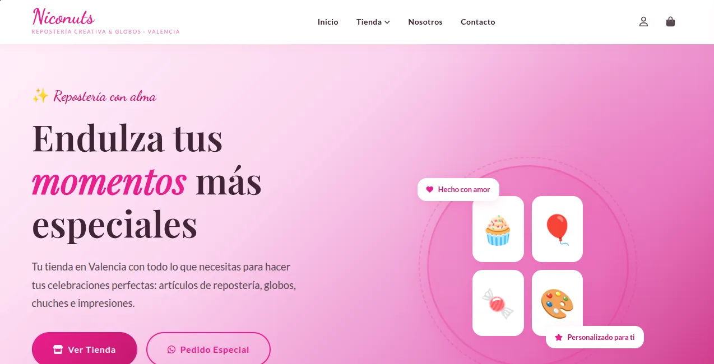

01Tienda online
Niconuts
Web de Niconuts, una tienda de Valencia que vende artículos de repostería, globos y chuches.
- Catálogo por categorías
- Carrito y cuentas de usuario
- Pedidos especiales por WhatsApp
Visitar web
PHP · MySQL · CSS
